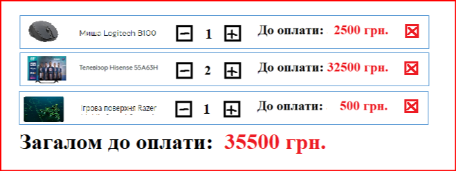

Сяючі зорі. Вказана кількість зірочок повинна з’являтися у випадковій частині екрану. Кожна зірка (це екземпляр класу Star) з певним кроком і інтервалом збільшується від мінімального до максимального розміру. Як тільки досягнути максимального розміру зірочка повинна з’являтися у іншій випадковій позиції.
Байрактар. З верхньої частини екрану у випадковій позиції по горизонталі з’являються танки, які їдуть вниз. При кліку на танк він вибухає і зникає з екрану.
На формі вводять 7 числових значень (вік, зріст, вага, заробітна плата, стаж, номер відділу, порядковий номер). Додати подію обробки події click на форму і якщо клік на внутрішньому input, то автоматично замінювати значення його на 0. Використати делегування
На сторінці міститься певна кількість кнопок і інпутів. Підраховувати загальну кількість кліків окремо на кнопках і окремо на інпутах.
Дано перелік товарів у кошику. При зміні кількості одиниць товару збільшувати загальну вартість. Створити клас Product, що призначений для маніпуляцій товаром та клас ProductManager що оперує з усіма товарами через подію передвати ідентифікатор товару та операцію, що зроблена
